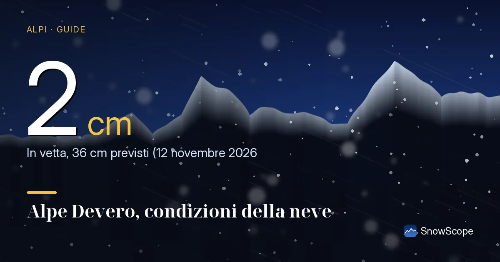

Alpe Devero, condizioni della neve: 2 cm in vetta, 36 cm previsti (12 novembre 2026)
La neve di inizio stagione ad Alpe Devero è frammentaria e si scioglie rapidamente. La montagna ha 2 cm in vetta (2201 m) e nulla a valle e sui pendii intermedi, ma i prossimi sette giorni porteranno 36 cm in vetta, 24 cm a mezza montagna e 21 cm a valle.
Le previsioni neve in tempo reale per Alpe Devero nell'app SnowScopeAltezza neve, allerte powder e mappa 3D, gratis.

Quello che c'è adesso
Novembre è iniziato scarico. Nella prima settimana sono caduti 3 cm a valle (1640 m), 8 cm a mezza montagna (1920 m) e 11 cm in vetta. La maggior parte di quella neve in quota è arrivata negli ultimi due giorni prima del 12 novembre, ma il sole e il vento l'hanno ridotta a 2 cm in vetta.
Valle e mezza montagna sono nude. È tipico per l'inizio di novembre sulle Alpi. Quello che cade a quote inferiori si deposita su terreno caldo e scompare nel giro di pochi giorni.
La settimana in arrivo cambierà le cose
Le previsioni per i prossimi sette giorni mostrano un vero cambio. La neve aggiungerà 21 cm a valle, 24 cm a mezza montagna e 36 cm in vetta entro il 19 novembre. È abbastanza per coprire gli affioramenti a mezza montagna e per costruire un primo strato di sci vero alle elevazioni maggiori.
La tempistica conta: 8 cm cadranno in vetta nelle prossime 24 ore (13–14 novembre), poi altri centimetri il 15 novembre. La maggior parte della neve restante arriva più tardi nella settimana.
Novembre di solito è scarico qui
Gli inverni passati mostrano che novembre ad Alpe Devero è un mese di attesa. La profondità mediana alla fine di novembre è solo 7 cm a valle, 11 cm a mezza montagna e 17 cm in vetta. La neve arriva, ma lentamente e in quota.
La prima neve tipicamente cade in vetta entro il 12 ottobre, a mezza montagna entro l'1 novembre e a valle entro il 5 novembre. Quest'anno segue da vicino questo schema. L'ultima neve della stagione, al contrario, spesso persiste in vetta fino a circa il 27 giugno.
Quando la stagione prende forma
Dicembre ispessisce il manto a 21 cm a valle, 28 cm a mezza montagna e 40 cm in vetta. L'accumulazione reale inizia a gennaio e continua fino ad aprile. Marzo porta tipicamente 54 cm a valle e 69 cm a mezza montagna; aprile aggiunge 92 cm in vetta.
In un inverno medio negli ultimi 46 anni, il picco raggiunge 71 cm a valle, 87 cm a mezza montagna e 111 cm in vetta. L'inverno passato (2025–26) ha raggiunto un picco inferiore: 62 cm, 78 cm e 102 cm. La tendenza negli ultimi decenni è verso meno neve in vetta: 122 cm nei primi 15 inverni della serie, sceso a 102 cm negli ultimi 15.

Dove arriva il manto affidabile
L'elevazione di mezza montagna (1920 m) è il posto più sicuro per trovare neve sciabile entro fine marzo. La settimana 13 (circa 23–29 marzo) ha 50 cm o più in 91 inverni su 100 precedenti, con una profondità tipica di 72 cm. La vetta (2201 m) è affidabile per ancora più a lungo: 13 settimane della stagione hanno 50 cm o più in 9 inverni su 10 precedenti.
La base a 1640 m è la più lenta ad accumularsi e la più veloce a ridursi. Anche in un inverno pieno, il picco lì è solitamente 71 cm, e la maggior parte arriva tardi. Al contrario, il picco della vetta di 111 cm può persistere fino ad aprile e maggio.
La stazione e il suo contesto
Alpe Devero è un'area piccola: 5 km di piste mappate e 5 impianti. Il vero richiamo è il paesaggio. La montagna si trova in un bacino ampio, senza auto, sopra il paese di Baceno nella valle dell'Ossola, con sentieri per le ciaspole sui pendii aperti e scialpinismo sulle creste e le propaggini che bordano l'alpe.
I numeri sopra descrivono l'area dell'impianto. I tour con gli sci sopra le piste mantengono la profondità più a lungo, soprattutto su terreno esposto a nord. L'isolamento del sito—nessun veicolo nel bacino stesso—lo rende un rifugio per gli sciatori e i camminatori in cerca di inverni tranquilli.
Consigli per sciatori
- Aspetta la neve prevista (21–36 cm entro il 19 novembre) prima di guidare verso Devero. Il terreno nudo a valle adesso rallenterà una salita da Baceno.
- Mezza montagna (1920 m) raggiungerà prima il manto sciabile. I sentieri a valle potrebbero aver bisogno fino a dicembre per assestarsi correttamente.
- Una volta che la neve si accumula, verifica il bollettino valanghe AINEVA (bollettini.aineva.it) prima di fare ciaspole o scialpinismo sui pendii aperti intorno all'alpe.
- Conferma le operazioni degli impianti sul calendario della stazione prima di viaggiare. Le date di apertura di inizio stagione seguono il calendario della stazione, non la mappa della neve.
- La neve di inizio novembre su pendii esposti a sud si scioglie rapidamente. Il terreno esposto a nord e le elevazioni più alte terranno più a lungo il primo manto utilizzabile.
Su questi numeri
Le altezze neve delle località sono la neve più alta sui pendii superiori alla data indicata; sono stime per un'area, non una misura in un punto. Le previsioni possono cambiare. Leggi sempre il bollettino valanghe ufficiale prima del fuoripista.
Bollettini valanghe ufficiali: AINEVA – Associazione Interregionale Neve e Valanghe
Cita questo articolo
Per ricerca, didattica o stampa: numeri e grafici sono liberamente riutilizzabili con licenza CC BY 4.0 citando così.
SnowScope (2026), Alpe Devero, condizioni della neve: 2 cm in vetta, 36 cm previsti (12 novembre 2026), https://snowscope.app/blog/it/2026/11/alpe-devero-snow-conditions-12-november-2026.html, consultato il 2026-11-12
SnowScope (Atlas Labs). (2026, November 12). Alpe Devero, condizioni della neve: 2 cm in vetta, 36 cm previsti (12 novembre 2026). SnowScope snow reports. https://snowscope.app/blog/it/2026/11/alpe-devero-snow-conditions-12-november-2026.html
BibTeX
@misc{snowscope2026alpedeverosnowconditions,
author = {{SnowScope (Atlas Labs)}},
title = {Alpe Devero, condizioni della neve: 2 cm in vetta, 36 cm previsti (12 novembre 2026)},
year = {2026},
month = nov,
howpublished = {\url{https://snowscope.app/blog/it/2026/11/alpe-devero-snow-conditions-12-november-2026.html}},
note = {Published 2026-11-12 09:44 UTC; accessed 2026-11-12}
}· CC BY 4.0 · Metodi, dati e strumenti →
Alpe Devero: neve e temperatura per quota, quest'inverno vs lo scorso (strumenti) →
Segui Alpe Devero
Gratis: un messaggio quando arriva la neve e il meteo ogni mattina.
Altri bollettini neve

La neve di oggi a Cortina, la previsione stagionale europea per dicembre e le nostre probabilità di un Natale bianco nelle Dolomiti orientali.

La neve di oggi ai Grands Montets, la previsione stagionale europea per dicembre e la nostra mappa di dove dicembre sembra più o meno nevoso intorno al Monte Bianco.